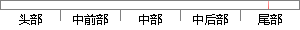

点击问卷操作列里的提交审核按钮，将问卷提交给管理员审核。
片段位置图

相似结果|
相似片段 1：管理员通过点击“提交”按钮，把发布提交给IT服务经理申请上线。(3)审核上线申请：所有的发布上线前都需要经过IT服务经理的审核，如果审核结论为“同意”，则提交给Irr部门经理审核，如果审核结论为“不同意
相似片段 2：点击“送系统资产管理员”按钮，归还申请单将提交给资产管理部门的资产管理员审核。部门资产管理员可以在自己的已办事宜中看到提交审核成功的申请单。如果用户点击“保存为草稿”按钮，归还申请单将被保存到草稿箱
相似片段 3：查看针对该学生的教学策略和学习策略，也可以根据姓名查找学生。教师还可以修改、添加教学策略和学习策略，完成后点击“提交”按钮，系统会将教师添加的策略提交给管理员进行审核，见图13。圈13教师修改、舔加
相似片段 4：点击“提交”按钮，把发布提交给IT服务经理申请上线。5．审核上线申请所有的发布上线前都需要经过IT服务经理的审核，如果审核结论为“同意"，则提交给IT部门经理审核，如果审核结论为“不同意”，则退回给发布
相似片段 5：保存状态的交通事故提交给总局。提交后等待总局审核。如审核通过，不能再修改。(3)当事故状态为保存状态时，点击前面的单选按钮，点击删除，即可删除。(4)点击添加按钮，可以添加新的交通事故。填写相应的数据，保存，或者自己提交。
相似片段 6：无误后，点击提交，系统自动提交给业管部审核员，进入下一环节。(3)功能名称：后评价结果展示A、确认：该按钮是工作提醒界面，后评价数据条下面的功能键，分行有权审批人审核时，可对数据条进行多选(关注客户除外
相似片段 7：业务上线的信息进行审核，如果发现SI填写的信息不全或错误可以点击“驳回”按钮ADC系统将此信息退回到S工管理员处，由S工管理员重新填写信息后再提交。ADC管理员对SI提交业务上线的信息进行审核，审核通过后可以点击“通过”的按钮进入S工测试报告上传的流程。
|
※ 片段修改建议 ※
近似词参考：- 操作：操纵
- 审核：考核
- 审核：考核
系统自动生成语句： 点击问卷操纵列里的提交考核按钮，将问卷提交给管理员考核。
注：本片段修改建议为系统自动生成，仅供参考。